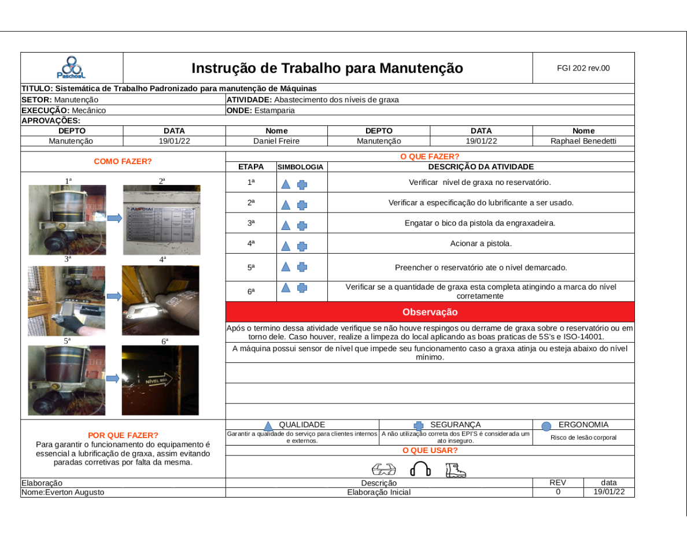

Instruções de Trabalho
A Instrução de trabalho é uma ferramenta onde é documentado a padronização de especificas tarefas de uma operação. Em Seu conteudo é descrito todos os passos ordenadamente de um processo que deve ser seguido.
Abastecimento de Graxa
Download do arquivo